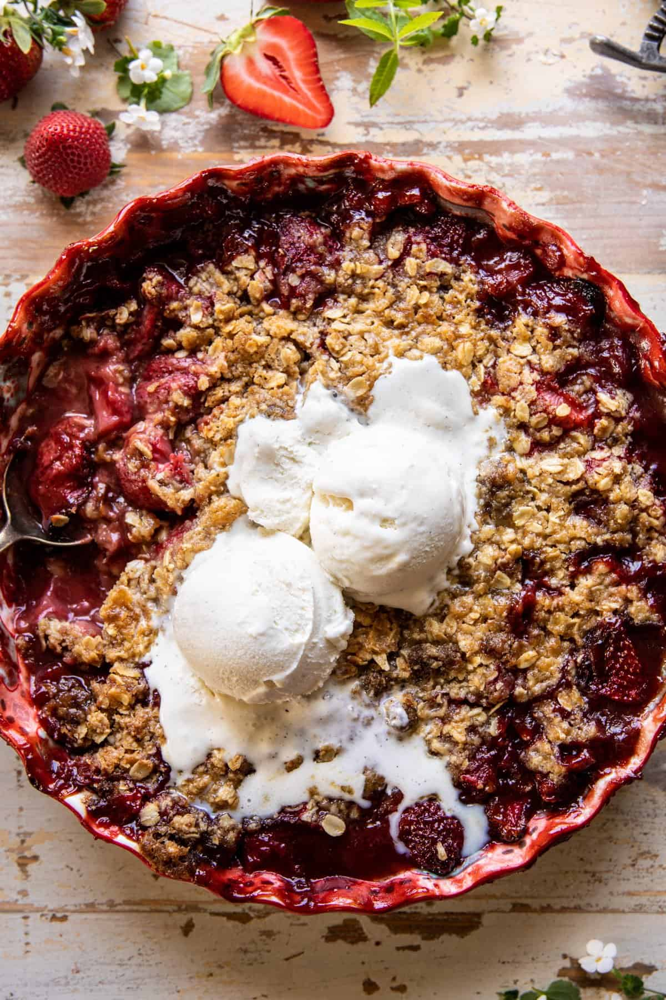

Strawberry Burbon Crisp

Description
This strawberry burbon crisp is the perfect summer dessert. A sweet and
complex strawberry filling with an maple and oat crumble on top.
This dessert is perfect when served with ice cream or sweetened greek
yogurt.
This is also an excellent option to bring to summer cookouts and
barbeques!
Ingredients
Base
- 6 cups fresh strawberries, halved (about three pounds)
- 1/2 cup thick strawberry jam
- 2 tablespoons maple syrup
- 2 tablespoons cornstarch
- 1/2 teaspoon cinnamon
- 2-3 tablespoons burbon (optional)
- 2 teaspoons vanilla extract
Topping
1 cup all purpose flour
1/2 cup old fashioned oats
2 tablespoons brown sugar
1 teaspoon cinnamon
1/4 teaspoon kosher salt
12 tablespoons (1 1/2 sticks) cold salted butter, cubed
4 tablespoons maple syrup
For serving
- Vanilla bean ice cream or sweetened greek yogurt
Steps
- Preheat oven to 350° F.
-
In a large bowl, toss together strawberries, strawberry jam, maple,
cornstarch, cinnamon, bourbon, and vanilla. Spread the fruit out into a
10-12 inch baking dish or cast iron skillet.
-
To make the topping, combine the oats, flour, brown sugar, cinnamon, and
salt in a bowl. Add 8 tablespoons butter and cut the butter into the dry
ingredients using a fork or pastry cutter. Sprinkle over the fruit. Bake
30 minutes.
-
Remove the crisp from the oven, remove the foil, and arrange 4
tablespoons butter evenly on top. Drizzle the maple syrup over the
butter. Bake another 20-30 minutes. If a crisper topping is desired,
broil for 1 minute.
-
Let cool 20-30 minutes, then serve with ice cream or sweetened greek
yogurt.
Recipe Source: Halfbakedharvest